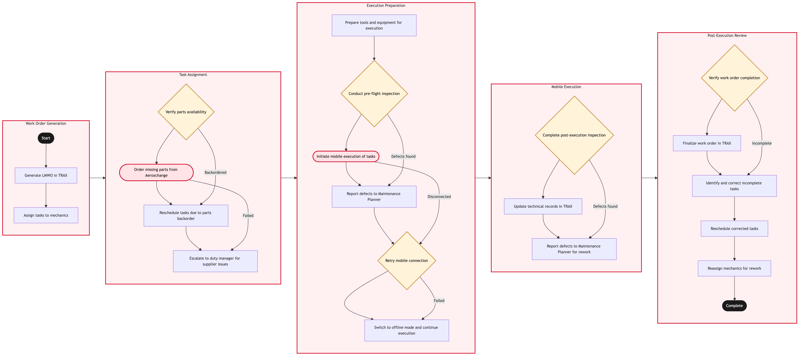

Updated 2026-08-18
Line Maintenance Work Order Execution
Process flow
Click to zoom

Process steps
▼
Phase 1 — Work order raise and plan
4 steps
| Step | Activity | Role | System | Input | Output | KPI | Dec | Exc | Pain point |
|---|---|---|---|---|---|---|---|---|---|
| 1.1 | Receive defect or scheduled task trigger | Maintenance Control Coordinator | TRAXB | Technical log entry or maintenance forecast | Raised work order against the tail | Work order raised within 15 minutes of trigger | N | N | Crew technical log entries are free text and need interpretation before they can be coded |
| 1.2 | Assess against the minimum equipment list | Maintenance Controller | TRAXB | Defect description and aircraft configuration | MEL applicability decision | MEL assessment completed before the aircraft leaves the gate | Y | N | MEL interpretation under turnaround pressure is the highest-judgement step in the process |
| 1.3 | Confirm parts availability and reserve stock | Materials Planner | TRAXB | Required part numbers | Reserved parts with a location and a delivery route | Parts available at station for 92 percent of line defects | Y | N | Parts held at an outstation are invisible to the hub planner in practice |
| 1.4 | Assign technician and confirm ground time | Line Maintenance Supervisor | TRAXB | Work order and turnaround plan | Assigned technician with an agreed work window | Assignment completed within 10 minutes of work order raise | N | N | Ground time is negotiated verbally with the turnaround coordinator rather than being scheduled |
▼
Phase 2 — Execution at the aircraft
4 steps
| Step | Activity | Role | System | Input | Output | KPI | Dec | Exc | Pain point |
|---|---|---|---|---|---|---|---|---|---|
| 2.1 | Retrieve task card and technical data | Line Maintenance Technician | TRAX eMobilityB | Work order reference | Task card with the applicable maintenance manual reference | Task card retrieved at the aircraft in under 2 minutes | N | N | Retrieving technical data at the aircraft is the usability constraint that costs the most ground time |
| 2.2 | Perform maintenance task | Line Maintenance Technician | TRAX eMobilityB | Task card and reserved parts | Completed task with findings recorded | Task completed inside the agreed ground time for 88 percent of defects | N | N | Findings are noted on paper at the aircraft and transcribed later |
| 2.3 | Record parts consumed and labour | Line Maintenance Technician | TRAX eMobilityB | Parts fitted and hours worked | Parts and labour posted against the work order | Parts and labour posted same shift at 100 percent | N | N | Late posting distorts both inventory position and reliability data |
| 2.4 | Escalate to AOG where the task cannot be completed | Line Maintenance Supervisor | TRAXB | Incomplete task and cause | AOG event raised with recovery plan | AOG raised within 20 minutes of the completion failure | N | Y | The threshold for declaring AOG is applied inconsistently between stations |
▼
Phase 3 — Certification and release
4 steps
| Step | Activity | Role | System | Input | Output | KPI | Dec | Exc | Pain point |
|---|---|---|---|---|---|---|---|---|---|
| 3.1 | Defer under MEL where permitted | Maintenance Controller | TRAXB | Uncompleted defect with MEL relief | Deferred defect with a rectification interval | Zero deferrals recorded outside their permitted interval | Y | N | Deferral intervals are tracked in TRAX but the operational consequence is not visible to ops control |
| 3.2 | Certify task completion | Certifying Technician | TRAXB | Completed task record | Certification of release with authorisation stamp | Certification recorded before off-block at 100 percent | N | N | Certification depends on an authorised individual being physically present at the station |
| 3.3 | Release aircraft to service | Maintenance Controller | TRAXB | Certified work order and MEL position | Aircraft released to service | Maintenance-attributed departure delay below 1.5 percent of departures | N | N | Release status is communicated to ops control by telephone rather than by system event |
| 3.4 | Close work order and feed reliability data | Maintenance Control Coordinator | TRAXB | Certified and released work order | Closed work order feeding reliability trend analysis | Work orders closed within 24 hours at 98 percent | N | N | Transcribed findings lose the detail that reliability engineering needs for trend analysis |
Swim lanes
Maintenance Control Coordinator1.1 3.4
Maintenance Controller1.2 3.1 3.3
Materials Planner1.3
Line Maintenance Supervisor1.4 2.4
Line Maintenance Technician2.1 2.2 2.3
Certifying Technician3.2
Systems touched
TRAXBTRAX eMobilityBTransport Canada CAWISCAeroxchangeC
Key performance indicators
- Maintenance-attributed departure delay below 1.5 percent of departures
- Line defects rectified inside the agreed ground time above 88 percent
- Parts available at station for 92 percent of line defects
- Work orders closed within 24 hours at 98 percent
- Zero deferrals carried beyond their permitted MEL rectification interval
Risks and control points
- Continuing-airworthiness exposure where certification or parts records are posted late or incompletely
- Ground time consumed by transacting away from the aircraft, converting a maintenance task into a departure delay
- MEL deferrals accumulating without operational visibility to ops control or network planning
- Transcription from paper to system losing the fault detail that reliability engineering depends on
- Outstation parts positions being invisible to hub planning, forcing avoidable AOG events
Air Canada Process Wiki — process and systems reference compiled from public sources
for IT Application Management and User Support pre-sales discovery.
Built 2026-08-21. Every system carries an evidence tier: tier C is an industry pattern and tier U is an open
question, and neither should be asserted as fact about Air Canada without confirmation in discovery.
Not affiliated with or endorsed by Air Canada. Air Canada, Aeroplan and Altitude are trademarks of Air Canada.